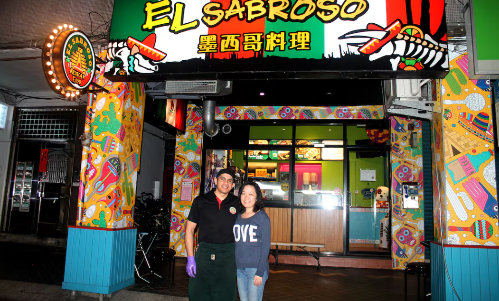

Así como los españoles nos impusieron sus costumbres, tradiciones, religión, gastronomía y hasta idioma, nosotros como mexicanos hemos conquistado al mundo en el aspecto culinario. Al llegar Hernán Cortés y su ejército al Imperio Azteca, quedó asombrado por la gran cultura culinaria que en esas tierras había.
Técnicas ancestrales
Con técnicas como el asado directo o indirecto (donde piedras eran la superficie para colocar los alimentos), la cocción por vapor para tamales dentro de ollas de barro envueltas en hojas de maíz o plátano, y el método a las brasas (hoy barbacoa o pibil), Mesoamérica empezó a generar la base de la cocina mexicana.
En la cultura se encuentra una gran variedad de platillos regionales que se han mantenido a través del tiempo; recetas de la época prehispánica que hasta el día de hoy se conservan y que, aunque se han modificado, siguen teniendo un valor cultural muy importante para nosotros y para el mundo.
Esto se debe a las culturas del México prehispánico que nos ayudaron a construir este gran Patrimonio Inmaterial de la Humanidad, reconocido por la UNESCO en 2010. La comida mexicana se distingue por sus diferentes maneras de preparar los alimentos y su forma de cosechar los ingredientes, lo que le da una esencia única.
(Mondragón, 2015)
Estudios muestran que antes de la llegada de los españoles, la dieta de los pueblos de Mesoamérica dependía en un 80% de las plantas que cultivaban.
(M., 2018)
Alimentos básicos
Los alimentos básicos de estas culturas eran: el maíz, el frijol, la calabaza y el chile. Estos cuatro ingredientes, junto con las habilidades culinarias indígenas, permitieron desarrollar técnicas y preparar una amplia variedad de platillos que se complementaban con la caza, la pesca y la recolección.
El maíz, originario de América Central, jugó un papel central en las creencias religiosas de mayas y aztecas. Actualmente México es uno de los principales productores de maíz a nivel mundial, y productos preparados con maíz incluyen: tortilla, chilaquiles, elotes, huitlacoches, tamales y tacos.
(Compartido - Fideicomiso de Riesgo, 2017)
La cocina mexicana también es innovadora y se adapta a los cambios a lo largo del tiempo, característica que la diferencia de otras tradiciones culinarias.
Demanda internacional
Estados Unidos, España, China y Francia son los países donde más se consume comida mexicana en el extranjero, siendo España uno de los mercados principales.
- Cerveza de malta
- Tomate
- Aguacate
- Tequila
- Azúcar
Comida típica que motiva viajes
- Tacos al pastor
- Enchiladas
- Guacamoles
- Tamales
- Chilaquiles
- Pastel de tres leches
- Esquites
- Mole poblano
- Picadillo
- Tostadas
Como podemos ver, la comida española si ha modificado de alguna manera nuestros alimentos, al punto de que algunos han evolucionado, pero, aun así, la gastronomía mexicana sigue siendo motivo para que la gente extranjera quiera visitar nuestro país e igualmente varios productos de México son exportados de manera que beneficia a nuestra economía, aumentando así el comercio internacional.
(Arias C. J., 2025)
